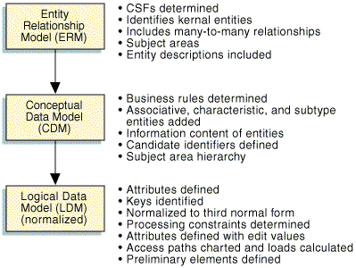

| Work Product Descriptor (Artifact): Data Model |
 |
|
| Fulfilled Slots | |||
|---|---|---|---|
| Roles | Responsible: | Modified By: | |
| Input To | Mandatory:
| Optional: | External:
|
| Output From | |||
The figure below illustrates that a data model has an association to an overall logical data design that is obtained via the progression of the data model through different states – entity relationship model, conceptual data model, and logical data model.  Though the above figure diagrammatically shows development of a logical data design as a cascading serious of steps, the delineation between these steps is not that clear-cut. In reality, a logical data design expands, contracts, and interplays across these data model states throughout the development. Entity Relationship Model (ERM) An ERM level of a logical data design presents a high-level view of the significant information of interest to the business and establishes the foundation from which data design will progress. It depicts the significant business notions and concepts associated with an application as entities, potentially some elaboration as to the important business characteristics of those notions/concepts via the attributes listed for each entity, and the relationship between these business notions/concepts in the form or data relationships. Conceptual Data Model (CDM) A CDM level of a logical data design depicts a high level statement of the main entities needed to support an application, along with known (but not necessarily complete) listings of the attributes associated with the entities in the data design. It is an expansion of the information conveyed in the ERM level of a logical data model as usually discovered via top-down analysis. Development of a logical data design to a CDM level is closely integrated with the development of an application's process models. Logical Data Model (LDM)
A LDM is an implementation-independent data model and generally represents the final deliverable in the logical data
design efforts of a project. Using the CDM as input, it reflects the dynamic nature of the entities in the
logical data design and optimizes the entities in the data model toward ensuring each strongly and uniquely represents
a business notion. |
| Optional | |
|---|---|
| Planned |
| Examples |
|---|
|
| Checklists | |
|---|---|
| Guidelines | |
| Supporting Materials | |
| Estimation Considerations |
Licensed Materials - Property of IBM |